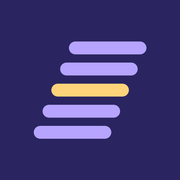

Privacy Policy
Effective October 26, 2026
Diel does not collect any data. Everything you enter stays on your iPhone. There is no account, no analytics, no advertising and no tracking, and the app does not connect to the internet.
Who we are
Diel is made by Polina Bezrukavaia, an independent developer. In this policy “we” means the developer.
What the app stores on your iPhone
To build and run your sleep plan, Diel keeps the following in its own storage on your device:
- your sleep plan: the times you wake up and fall asleep, your target, sleep length, pace and strategy;
- your reminders and the wake-up alarm setting;
- the nights of your plan that have already passed, as planned, for the chart;
- a log of your protocols: when one started, was changed, finished or was reset, with the plan at that moment;
- your choice of theme.
This data never leaves your device through the app. We cannot see it, and nobody else receives it. It is included in your iPhone backups (iCloud or a computer) if you have backups turned on; those backups are handled by Apple under your own settings.
Notifications and alarms
If you allow it, Diel schedules reminders and alarms on your iPhone with Apple’s notification and alarm features. They are created and delivered on the device itself. You can turn them off in the app or in Settings at any time.
Apple Health
Diel does not read from or write to Apple Health.
What we do not do
- We do not collect, sell or share personal data.
- We do not use analytics, advertising or tracking tools, and the app contains no third-party code.
- We do not ask you to create an account.
Deleting your data
Deleting Diel from your iPhone deletes everything it stored. Copies inside your existing device backups follow your backup settings.
Children
Diel does not knowingly collect information from anyone, including children, because it collects no information at all.
Not medical advice
Diel helps you plan sleep times. It is not a medical device and does not diagnose or treat any condition. If you have a sleep disorder or health concerns, talk to a doctor.
Changes to this policy
If this policy changes, the new version will be posted on this page with a new effective date. If a future version of the app ever collects data, this page will say so before that version is released.
Contact
Questions about privacy: dielapp@proton.me